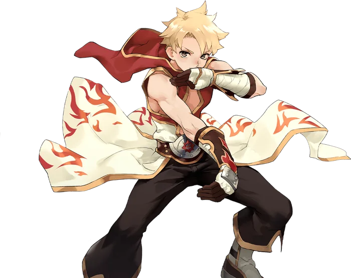

Third tier
Champion
Champion is the primary advancement option for the Monk. While Monks found themselves with the option to dedicate themselves to either Spiritual or Combo skills, the Champion seeks to marry these two skill branches together into a perfect harmony.
As with Monk before it, Champion has two primary skill branches. The first is Combo skills, which either repeat rapidly if under the Iron Fists status, or are guaranteed to be Critical if under the Discipline status. These are matched by the Spirit skills, which similarly gain reduced cooldowns while under the Discipline Status, and inflict various status effects while under the Iron Fists Status.
Linking these two disparate branches together are two support skills. One is Unburden, stripping the user's Iron Fists and Discipline statuses to heal and recover SP, depending on which status was consumed. This becomes a powerful sustain option when combined with the other skill, Zen, which grants the user both the Iron Fists and the Discipline Status simultaneously.
The final two skills are what everyone who plays Monk inevitably asks about. Unbreakable Resolve consumes the user's remaining SP to grant themselves a powerful damage reduction buff, while Guillotine Fist consumes the user's remaining SP to deal unbelievable damage to a single target. Both of these skills gain additional effects based on which of Iron Fists or Discipline are active, and thanks to Zen, are capable of benefiting from both.

Skill list
Skills
Skill names and effects are kept in English because that is how they appear in game.
- Zen
The user calms their mind and relaxes their body, drawing out their true inner strength and exceeding their limits for a brief moment. Immediately grants both the Iron Fists and Discipline statuses. This skill does not interfere with the stack count of Spiritual Cadence or Fury.
- Unburden
The user releases themselves of all worldly attachments, freeing themselves to focus solely on the enemy before them. Consumes the Iron Fists, Discipline, and Fury Statuses to gain various effects. If Iron Fists is consumed, the user recovers a large amount of HP. If Discipline is consumed, the user recovers a large amount of SP.
- Raging Barrage
Combo Skill. Deals heavy damage to a single target. If the user is under the Discipline Status, this skill is guaranteed to Crit and grants double the level of Iron Fists. If the user is under the Iron Fists status, its cooldown is halved.
- Raging Windmill
Combo Skill. Unleashes a whirling blow, striking all enemies in the area around the user for moderate physical damage. If the user is in the Discipline status, it is guaranteed to Crit and grants double the level of Iron Fists. If the user is in the Iron Fists status, its cooldown is halved.
- Falling Mountain
Combo Finisher. Delivers a single crushing blow to the target. If the user is in the Discipline Status, it is guaranteed to Crit. If the user is in the Iron Fists status, its cooldown is halved. This skill consumes Iron Fists and Discipline, but does not grant them.
- Spiritual Rupture
Spirit Skill. The user creates a burst of spiritual energy at the targeted location, dealing Ranged Physical Damage to all enemies in the area. The damage is increased by the user's Magic Attack. If the user is in th eIron Fists Status, it has a chance to inflict Bleeding and grants double the level of Discipline. If the user is under the Discipline status, its cooldown is halved.
- Spiritual Pursuit
Spirit skill. The user wields their spiritual energy to hurl themselves at a distant foe, using their own body as a projectile. Deals Ranged Physical Damage to a single target that is increased by the user's Magic Attack. If the user is in the Iron Fists status, has a chance to inflict Internal Bleeding and grants double the level of Discipline. If the user is in the Discipline status, its cooldown is halved.
- Soul Explosion
Spirit Finisher. The user unleashes all of their spiritual power in a massive blast centered on themselves. Deals physical damage in an area around the caster, which is increased by the user's Magic Attack. If the user is in the Iron Fists status, all enemies struck are knocked back. If the user is in the Discipline status, its cooldown is halved. This skill consumes Iron Fists and Discipline, but does not grant them.
- Unbreakable Resolve
The user focuses inward, drawing out a supernatural resilience from within themselves. Consumes the user's remaining SP to grant them a buff that reduces all damage taken for the duration. While this skill is active, the user cannot gain the Iron Fists or Discipline statuses.
- Guillotine Fist
The user focuses all of their strength into a single blow, exhausting everything they have to ensure it is fatal. Consumes all of the user's remaining SP to deal massive damage to a single target. The damage is based on the amount of SP consumed, and is increased by the percentage of missing HP from the target. If the user is in the Iron Fists status, this skill is guaranteed to Crit and ignores Defense. If the user is in the Discipline status, the damage dealt is based on the user's Max SP instead of the amount of SP consumed. Once struck by this skill, the target will be immune to the effects of Guillotine Fist from the same caster for the next five minutes.
Come find out what changed
Make an account now, grab the client, and be there when the servers go up.